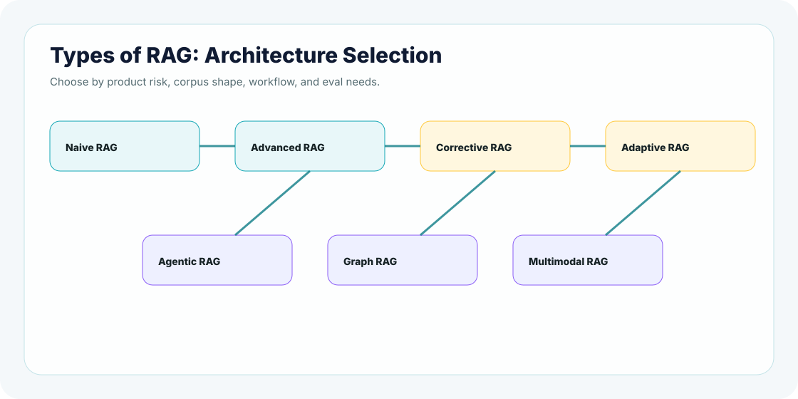

RAG is not one design. It is a family of architectures. The real skill is choosing the simplest pattern that can safely solve the product problem.
A strong builder does not ask, "Can we use RAG?" They ask, "Which RAG pattern fits this risk, corpus, latency, cost, and user workflow?"
Architecture mindsetThis chapter is about selection. Naive RAG is not bad. Agentic RAG is not automatically better. The best architecture is the one that solves the real problem with the fewest moving parts and enough safety.
Why This Topic Matters
Many teams overbuild RAG. They hear about graph RAG, agentic RAG, corrective RAG, and adaptive RAG, then try to use everything at once. The result is often slower, harder to debug, and less reliable than a simple retrieval pipeline.
Other teams underbuild. They ship basic top-k retrieval for questions that need multi-hop reasoning, freshness checks, access control, or correction loops.
Simple explanation
Types of RAG are architecture patterns. Each pattern adds a capability, but each capability also adds complexity.
Real-Life Analogy: Choosing a Transportation System
If you need to cross the street, you walk. If you need to deliver food across town, you use a bike or car. If you need to move thousands of people every morning, you need a train system. The smartest choice depends on distance, risk, speed, cost, and scale.
RAG works the same way. A simple FAQ assistant may only need naive RAG. A compliance assistant may need corrective checks. A research assistant may need multi-hop or graph RAG. A support operations assistant may need agentic RAG with tools.
Technical Explanation: RAG Pattern Map
Naive RAG
Retrieve top-k chunks and generate an answer. Best for simple, low-risk document Q&A.
Separate ingestion, retrieval, reranking, prompting, safety, and evaluation into clear modules.
Corrective RAG
Detect weak retrieval or unsupported answers, then retry, refuse, or escalate.
Adaptive RAG
Route each query to the simplest useful path based on intent, risk, and complexity.
Agentic RAG
Let an agent plan retrieval, use tools, ask follow-ups, and perform multi-step workflows.
Graph RAG
Use entities and relationships when answers depend on connected knowledge.
Multimodal RAG
Retrieve from text, images, tables, slides, audio, or video when knowledge is not only text.
Pattern ladder
Naive RAG
-> Advanced RAG
-> Modular RAG
-> Corrective / Adaptive RAG
-> Agentic RAG
-> Graph or Multimodal RAG when the domain requires it
Deep Comparison: What Each RAG Type Really Means
This is the section to slow down on. A production architect should be able to explain each RAG type not only by name, but by behavior, client fit, accuracy profile, consistency risk, scale impact, and operational cost.
Read this like a production design review. For every RAG type, ask: What failure does this architecture prevent? What new failure does it introduce? What metric proves it is working? What operational habit keeps it healthy after launch?
01
Naive RAG
Use this when the question is simple, the corpus is clean, and the risk is low.
User question -> top-k chunks -> answer with citations
Internal FAQSmall docs portalTraining assistant
What it is
The simplest RAG pattern: retrieve the best matching chunks and ask the model to answer from those chunks.
Example
An employee asks, "What is the travel reimbursement limit?" The assistant searches one approved policy folder and answers with a citation.
Production profile
AccuracyMedium
ConsistencyMedium
Latency / costLow
Scale pressureIndex freshness
Advantages
Fast to build and easy to explain.
Low cost and easier debugging.
Good for clean, low-risk corpora.
Watch-outs
Weak for ambiguous or multi-hop questions.
Chunk quality can make or break accuracy.
Conflicting documents reduce consistency.
Production failure mode
Naive RAG usually fails silently. The app still answers, but it may answer from a nearby chunk, an old policy, or a partial paragraph. The user sees confidence; the system has only similarity.
Engineering checklist
Define chunk size by document shape, not by random defaults.
Store source id, version, section title, owner, and last-updated timestamp.
Force citations and show "not enough evidence" when context is weak.
Metrics to watch
Recall@k, citation precision, no-answer rate, stale-source rate, average retrieved chunk age, and top failed user intents.
Architect note: Start here when you can. Upgrade only when retrieval misses, stale data, or risk prove that simple top-k is not enough.
02
Advanced RAG
Use this when basic retrieval needs sharper search, metadata, filtering, and evaluation.
Naive RAG plus stronger retrieval and context engineering: better chunking, metadata filters, hybrid search, reranking, query rewriting, and context compression.
Example
A refund assistant must answer differently by country, customer tier, product type, and policy effective date.
Production profile
AccuracyHigh
ConsistencyHigh if filters are right
Latency / costMedium
Scale pressureSchema + reranker
Advantages
Better recall and precision.
More control over source selection.
Stronger citations for enterprise content.
Watch-outs
More tuning and moving parts.
Bad metadata can confidently hide the right answer.
Reranking improves quality but adds latency.
Production failure mode
Advanced RAG often fails through configuration drift. A filter, reranker, or query rewrite quietly changes retrieval behavior, and teams notice only after users report missing answers.
Engineering checklist
Version metadata schemas and index builds.
Keep golden queries for each business rule and policy version.
Trace raw query, rewritten query, filters, candidate chunks, reranked chunks, and final context.
Metrics to watch
Filtered recall, reranker lift, policy-version correctness, query rewrite win/loss rate, p95 retrieval latency, and cost per answered query.
Architect note: This is the normal production step after naive RAG. Treat metadata design and retrieval evals as first-class engineering work.
03
Modular RAG
Use this when RAG is becoming a platform, not a single feature.
Enterprise platformMulti-team reuseAI foundation team
What it is
A RAG system split into clear components: ingestion, parsing, chunking, indexing, retrieval, reranking, prompting, safety, evaluation, and observability.
Example
A platform team builds one reusable RAG foundation for HR, support, engineering docs, and compliance assistants.
Production profile
AccuracyHigh if contracts hold
ConsistencyHigh
Latency / costMedium-high
Scale pressureVersioning + ownership
Advantages
Easier to test and maintain.
Components can be swapped safely.
Ownership is clearer across teams.
Watch-outs
Needs strong interfaces and contracts.
Version drift can create silent regressions.
Over-abstraction can slow early learning.
Production failure mode
Modular RAG fails when module boundaries are unclear. Ingestion blames retrieval, retrieval blames prompting, prompting blames the model, and nobody owns the end-to-end answer quality.
Engineering checklist
Define contracts for every stage: input, output, metadata, and error states.
Attach trace ids across ingestion, retrieval, prompt construction, answer generation, and evaluation.
Give every module an owner, dashboard, and rollback path.
Architect note: This is how RAG becomes engineering infrastructure. Track prompt versions, index versions, trace ids, and rollback paths.
04
Corrective RAG
Use this when a confident unsupported answer can hurt the user or business.
Retrieve -> check evidence -> retry or rewrite -> refuse or answer
SecurityComplianceLegal triageHealthcare policy
What it is
RAG that checks whether retrieval or grounding is weak, then retries, rewrites the query, refuses, or escalates.
Example
A security runbook assistant refuses to recommend an incident action unless both the runbook and access policy are retrieved.
Production profile
AccuracyHigh safety
ConsistencyThreshold-dependent
Latency / costMedium-high
Scale pressureConfidence tuning
Advantages
Reduces unsupported answers.
Builds trust in high-risk workflows.
Creates a controlled refusal path.
Watch-outs
Can over-refuse useful answers.
Confidence thresholds are hard to tune.
Extra checks add latency and cost.
Production failure mode
Corrective RAG can become too cautious or too trusting. If thresholds are loose, risky answers leak through. If thresholds are strict, users stop trusting the assistant because it refuses everything useful.
Engineering checklist
Separate retrieval confidence, answer-grounding confidence, and business-risk level.
A routing pattern that sends simple questions through a cheap path and risky or complex questions through stronger retrieval, correction, or escalation.
Example
"Where is the invoice page?" goes to simple docs retrieval. Refund eligibility goes to policy-versioned advanced RAG with stricter checks.
Production profile
AccuracyHigh if routed well
ConsistencyMedium-high
Latency / costVariable
Scale pressureRoute evals
Advantages
Balances quality, latency, and cost.
Avoids over-processing simple requests.
Protects high-risk requests with stronger paths.
Watch-outs
Routing mistakes are architecture mistakes.
Similar questions can behave inconsistently.
Every route needs its own eval set.
Production failure mode
Adaptive RAG fails when routing is treated like a small helper instead of a core model decision. The wrong route can turn a compliance question into a casual FAQ answer.
Engineering checklist
Define route labels using user risk, business risk, corpus type, and task type.
Build route-specific prompts, retrieval settings, eval sets, and fallback behavior.
Log why a route was chosen so incidents can be debugged later.
Metrics to watch
Route accuracy, route confusion matrix, fallback rate, route-level latency, cost by route, and answer consistency for near-duplicate questions.
Architect note: Route-level observability is mandatory. Log selected route, reason, fallback, latency, and answer status.
06
Agentic RAG
Use this when the product needs controlled action, not just an answer.
RAG where an agent plans steps, retrieves information, may call tools, asks follow-up questions, and performs controlled actions.
Example
A support assistant retrieves troubleshooting docs, asks for missing logs, drafts a ticket, and opens it only after user approval.
Production profile
AccuracyTask-oriented
ConsistencyHarder
Latency / costHigh
Scale pressureTool safety
Advantages
Handles multi-step workflows.
Can ask clarifying questions.
Can use tools under controls.
Watch-outs
Harder to test than single-turn RAG.
Tool misuse can create real damage.
Plans can vary across similar requests.
Production failure mode
Agentic RAG fails through uncontrolled autonomy. A helpful demo agent becomes risky in production when it can call tools, change records, send messages, or make decisions without clear boundaries.
Engineering checklist
Give tools least-privilege permissions and explicit input schemas.
Require approval gates for irreversible or customer-visible actions.
Record plan, retrieved evidence, tool call, tool response, final action, and user approval.
Metrics to watch
Tool-call precision, invalid tool-call rate, approval bypass attempts, task completion rate, rollback frequency, and human override rate.
Architect note: Use approval gates, tool permissions, action logs, planning limits, and rollback paths. Agentic does not mean uncontrolled.
07
Graph RAG
Use this when relationships matter more than isolated paragraphs.
Research intelligenceFraudSupply-chain riskLegal discovery
What it is
RAG that uses entities and relationships, often through a knowledge graph, when isolated chunks are not enough.
Example
A research assistant answers which portfolio companies connect to a supplier risk through board members, investments, or contracts.
Production profile
AccuracyHigh for links
ConsistencyGraph-dependent
Latency / costHigh
Scale pressureEntity freshness
Advantages
Strong for multi-hop relationships.
Good for explainable paths.
Useful for dependency and entity analysis.
Watch-outs
Entity resolution errors are expensive.
Graph construction takes serious effort.
Relationship freshness must be monitored.
Production failure mode
Graph RAG fails when entity identity is wrong. If "Apple" the company, "apple" the fruit, and "Apple India Pvt Ltd" are mixed, every downstream relationship can become misleading.
Engineering checklist
Design entity resolution rules and human review for high-value entities.
Store edge type, evidence source, timestamp, confidence, and ownership.
Answer with relationship paths, not only final text.
RAG that retrieves and grounds answers across non-text sources such as screenshots, charts, tables, slides, PDFs, audio, or video.
Example
A product support assistant answers from release notes, screenshots, UI diagrams, and pricing tables.
Production profile
AccuracyFormat-dependent
ConsistencyHarder
Latency / costHigh
Scale pressureExtraction quality
Advantages
Works when knowledge is not plain text.
Supports diagrams, tables, and screenshots.
Better for training and product material.
Watch-outs
Extraction quality varies by format.
Citations are harder than text citations.
Evaluation needs format-specific checks.
Production failure mode
Multimodal RAG fails at the extraction boundary. The model may be strong, but if OCR misses a table cell, a chart label, or a screenshot region, the final answer can look polished and still be wrong.
Engineering checklist
Store bounding boxes, page numbers, table coordinates, timestamps, and media source links.
Use format-specific extraction tests for PDFs, tables, slides, screenshots, and audio transcripts.
Show source regions when possible so users can inspect the evidence.
Metrics to watch
OCR accuracy, table extraction accuracy, visual grounding score, source-region citation accuracy, media parse failure rate, and cross-format contradiction rate.
Type Accuracy Consistency Scale/Cost Best For
Naive Medium Medium Low Simple FAQ/docs
Advanced High High Medium Policy/support/docs
Modular High High Medium-High Platform reuse
Corrective High safety High if tuned Medium-High High-risk answers
Adaptive High if routed Medium-High Variable Mixed workloads
Agentic Task-oriented Harder High Tool workflows
Graph High for links Depends graph High Relationships
Multimodal Format-based Harder High Images/tables/slides
Production Depth: What Makes This More Than a Demo?
A demo RAG system is judged by whether it gives one impressive answer. A production RAG system is judged by whether it gives grounded answers repeatedly, under messy data, changing policies, unclear user questions, latency limits, cost pressure, and audit requirements.
1. Data reality
The corpus is never clean for long
Documents change, owners move teams, PDFs have broken tables, old policy versions stay online, and the same answer may appear in multiple places with small differences. Production RAG needs freshness rules, source ownership, deprecation logic, and stale-content detection.
2. Retrieval reality
Similarity is not truth
Vector search finds what looks semantically close. It does not automatically know business priority, access rights, effective dates, jurisdiction, customer tier, or source authority. That is why metadata, hybrid search, reranking, and policy filters matter.
3. Answer reality
The final response must be evidence-shaped
The model should not simply sound helpful. It should expose what evidence it used, avoid unsupported claims, explain uncertainty, and refuse when the retrieved context is not enough. The answer policy is as important as the retrieval algorithm.
4. Operations reality
If you cannot observe it, you cannot improve it
Every answer should leave a trace: user intent, selected route, retrieved sources, filters, reranker scores, prompt version, answer status, latency, cost, and user feedback. Without traces, production debugging becomes guesswork.
Case study mindset
Same user question, different architecture
Question: "Can this customer get a refund?"
Naive RAG: acceptable only if one current refund policy exists and risk is low.
Advanced RAG: needed if refund depends on country, product, date, subscription tier, or contract type.
Corrective RAG: needed if a wrong answer creates legal, financial, or customer-trust risk.
Adaptive RAG: useful when some refund questions are simple status lookups and others are policy decisions.
Agentic RAG: justified only when the assistant must actually create a refund request, update CRM, or trigger approval.
The senior lesson: the same sentence from a user can require different architecture depending on risk, authority, and action surface.
Architecture View

Choose the architecture by problem shape, not by hype. Each extra capability should pay rent.
Decision Framework
Use this like an architecture review board. Do not choose a RAG pattern because it sounds modern. Choose it because the product risk, corpus shape, and workflow demand it.
North starSmallest architecture that can answer safely, consistently, and observably.
If a simpler path passes evals and handles the risk, keep it simple. If it fails, upgrade with a reason.
01
Is the question simple and source-grounded?
If the answer usually lives in one clear document or one clean knowledge area.
ChooseNaive RAG or Advanced RAG
Prove it with citation precision, Recall@5, and simple unsupported-answer checks.
02
Does the answer need multiple documents, policies, or metadata?
If country, role, product tier, date, contract type, or policy version changes the answer.
ChooseAdvanced RAG
Prove it with metadata-filter tests, reranker evals, source coverage, and stale-policy checks.
03
Can retrieval fail dangerously?
If a wrong confident answer can create security, legal, financial, health, or compliance risk.
ChooseCorrective RAG
Prove it with refusal accuracy, escalation correctness, confidence-threshold tests, and evidence-support checks.
04
Do queries vary by risk and complexity?
If some questions are cheap FAQ lookups while others require strict policy reasoning.
ChooseAdaptive RAG
Prove it with route accuracy, route-level latency, fallback rate, and consistency across similar questions.
05
Does the product need controlled action?
If the assistant must create tickets, call tools, update records, ask follow-ups, or execute workflows.
ChooseAgentic RAG with approval gates
Prove it with tool-call precision, approval-gate coverage, audit logs, rollback tests, and human-in-loop checks.
Relationship-heavy domain?Upgrade to Graph RAG
When entities, links, dependencies, and multi-hop relationships are the actual product value.
Knowledge outside text?Upgrade to Multimodal RAG
When the evidence lives in screenshots, diagrams, tables, slides, PDFs, audio, or video.
Production Trade-Offs
Production gear
Simplicity: Naive RAG is easier to debug and cheaper to run.
Accuracy: Advanced retrieval and reranking can improve grounding.
Workflow power: Agentic RAG can act, but it must be constrained and logged.
Knowledge structure: Graph RAG helps when relationships matter more than isolated chunks.
Senior builder habit: add architecture only when a failure mode or product requirement justifies it.
Common Mistakes
1. Using agentic RAG too early
If simple retrieval solves the task, agents may add cost and unpredictability.
2. Calling every retrieval system "advanced"
Advanced RAG should mean specific improvements: metadata, hybrid search, reranking, compression, evals, or correction loops.
3. Ignoring evaluation
Different RAG types need different evals. Graph RAG needs relationship evals. Agentic RAG needs tool-use evals.
4. Over-optimizing for demos
Production systems need access control, trace logs, fallback behavior, and release gates.
Mini Assignment
Choose three products: an HR assistant, a developer docs assistant, and a security runbook assistant. Pick the RAG type for each. Explain why the simplest option is enough or why a stronger pattern is justified.
Points To Remember
RAG is a family of architecture patterns.
Naive RAG is valid when the problem is simple and low risk.
Advanced RAG improves retrieval, context, grounding, and evaluation.
Corrective and adaptive RAG are useful when risk or query complexity varies.
Agentic, graph, and multimodal RAG should be justified by product needs.
Next, test architecture selection in the quiz, then practice choosing RAG patterns for production scenarios.